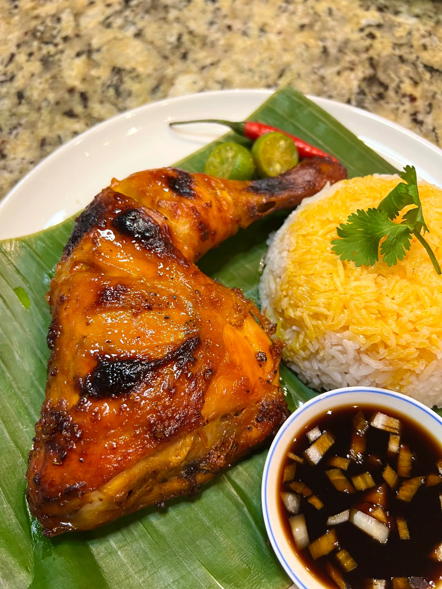

05
My Favorite Food
Adobo · the taste of home

Ingredients
- 1 kg chicken or pork, cut into pieces
- 1/2 cup soy sauce
- 1/3 cup cane vinegar
- 1 whole head of garlic, crushed
- 3 bay leaves
- 1 tsp whole peppercorns
- 1 cup water
- 2 tbsp cooking oil
Cooking Instructions
- Marinate the meat in soy sauce and garlic for at least 30 minutes.
- Heat the oil and brown the meat on all sides.
- Add the marinade, water, bay leaves and peppercorns, then bring to a boil.
- Pour in the vinegar and simmer, uncovered, for 30 to 40 minutes until tender and the sauce thickens.
- Taste, adjust, and serve hot over steamed rice.